The Guardian

Iranians living in UK tell Starmer that war will only strengthen Tehran regime
Nazanin Zaghari-Ratcliffe among more than 100 signatories to letter urging PM not to get drawn further into the conflict
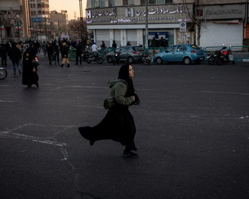
Desmond Hewitt responds to an article by an Iranian citizen living in Tehran in the midst of the ongoing war
Nazanin Zaghari-Ratcliffe among more than 100 signatories to letter urging PM not to get drawn further into the conflict

Several MPs question why the party rushed to endorse strikes that were likely in breach of international lawFollow our Australia news live blog for latest updatesGet our breaking news email, free app or daily news podcast
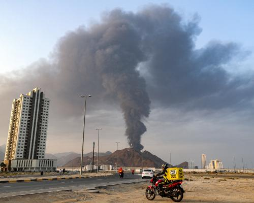
Opinion/Editorial
Countries such as Saudi Arabia, Qatar and the UAE are finding their carefully projected image of stability has been blown away
This is an opinion or editorial piece, not objective reporting. The author's personal viewpoint shapes the narrative.
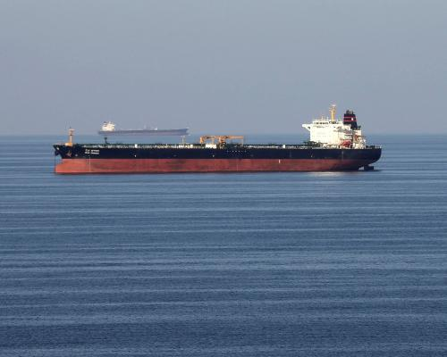
US president is ‘not afraid to use’ options to continue to allow free flow of oil through key tanker route, says White House press secretary Karoline LeavittPete Hegseth warns of day of ‘most intense’ US strikes on Iran yetHow have you been affected by the latest Middle East events?

Pentagon chief spoke with Gen Dan Caine at a press conference and blamed Iran for civilian casualties Sign up for the Breaking News US email to get newsletter alerts in your inbox
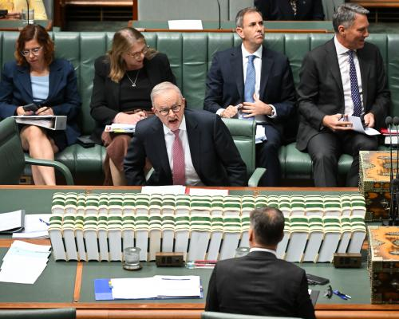
Follow updates live‘I’m buggered’: David Littleproud resigns as leader of National party as Matt Canavan flags tiltGet our breaking news email, free app or daily news podcast
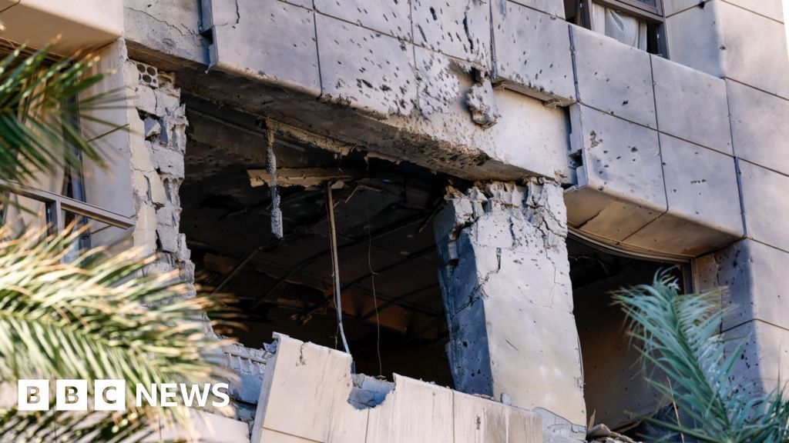
Israel's military says it targeted Quds Force operatives after a return to war with Lebanon's Hezbollah movement, but Iran says they were diplomats.
Iranians in Tehran and Karaj tell the BBC they are exhausted and struggling to sleep after 10 days of Israeli and US attacks.
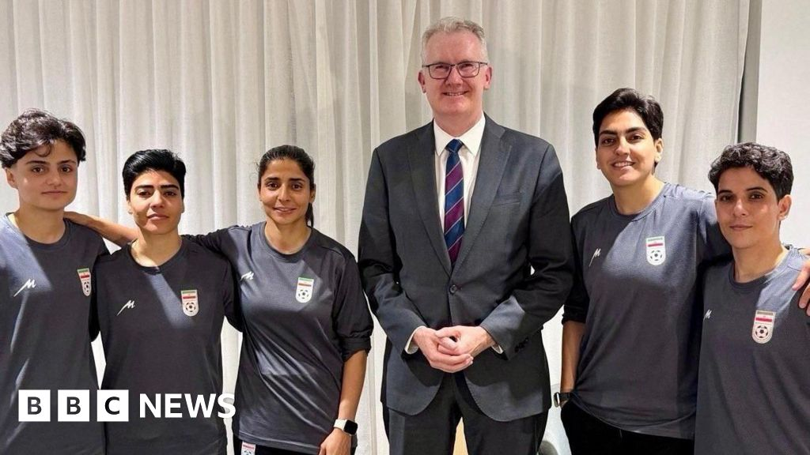
Concern has grown for team after one critic called them "wartime traitors" for failing to salute during the Iranian anthem.

President Aoun outlines a path towards "permanent security and stability", as Israeli strikes targeting Hezbollah continue.
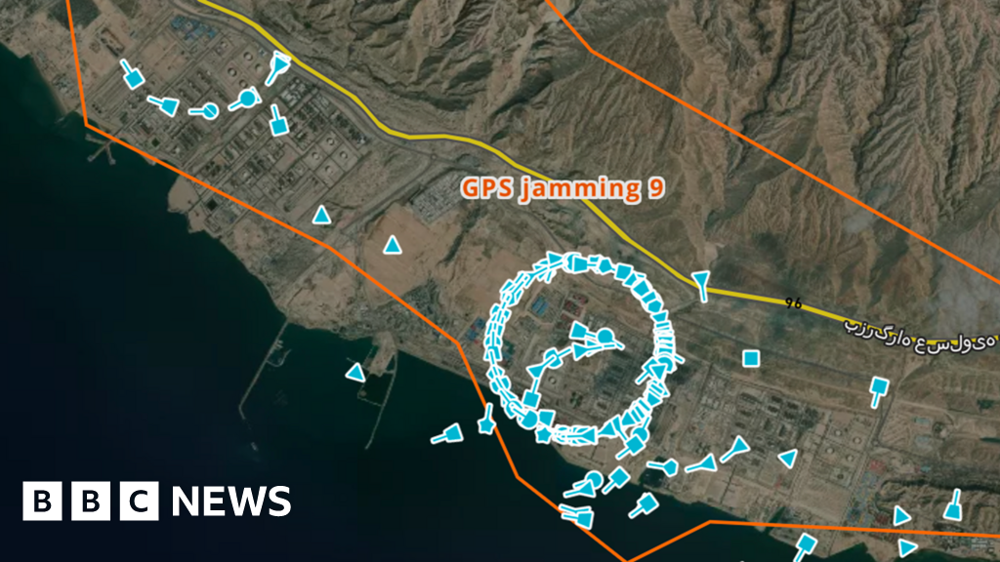
GPS jamming has made navigation hazardous in the Gulf, spurring efforts to develop alternatives.
Mojtaba Khamenei, 56, enters power as the Islamic republic faces its most serious crisis.
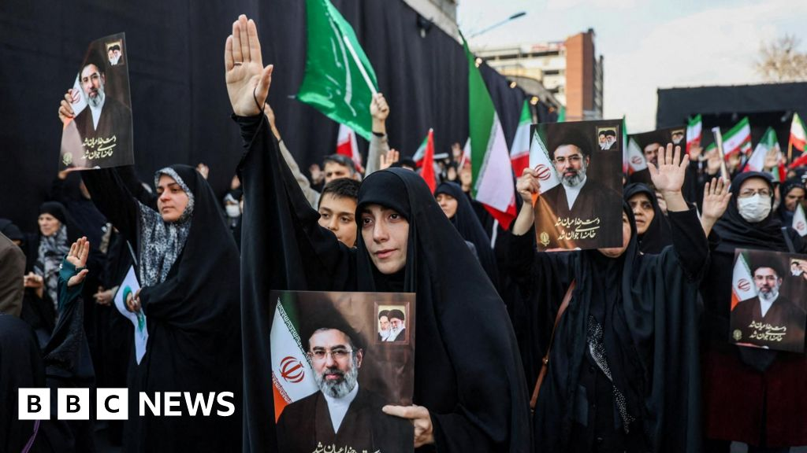
Iran and Israel continue to exchange attacks, as supporters of Khamenei celebrate the decision to name him supreme leader.
While pro-establishment crowds celebrate Khamenei's appointment as his father's successor, others believe it signals no change to how Iran is ruled.
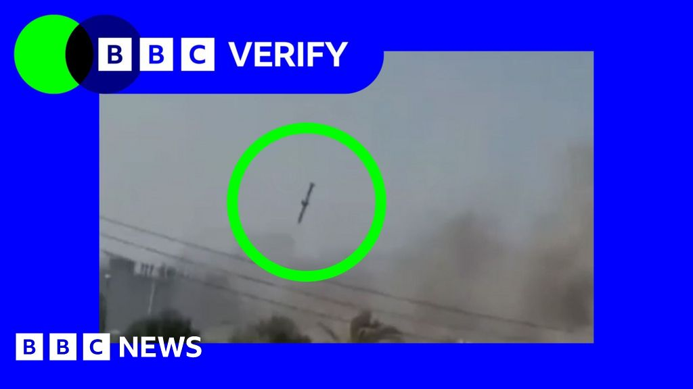
A US Tomahawk missile hit a military base near a primary school in southern Iran where Iranian authorities said 168 people were killed, expert video analysis shows.
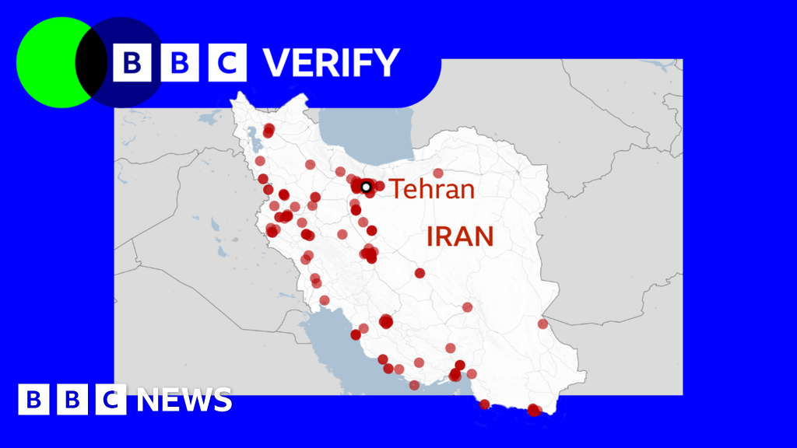
US-Israeli strikes hit Iran and Gulf states intercepted retaliatory strikes overnight as the war continues into an eleventh day.

Rescue workers carefully extracted an unexploded missile from a house in Kuhdasht City, following US-Israeli airstrikes.
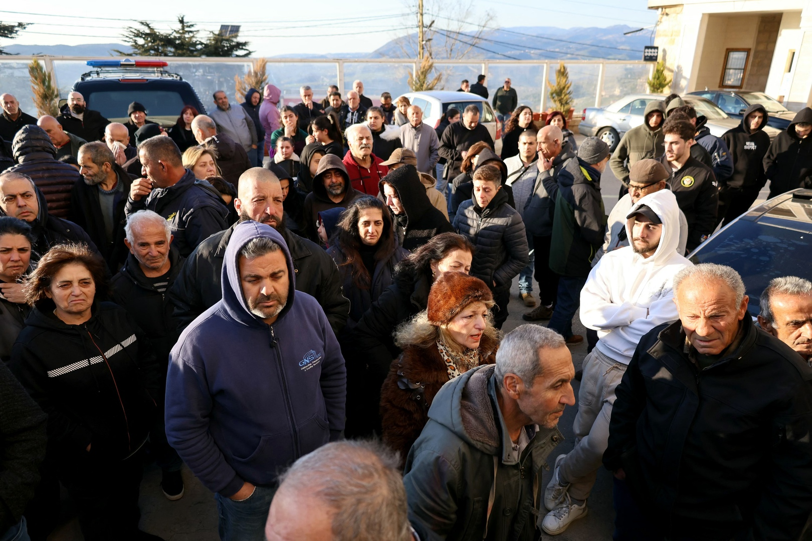
A Maronite Catholic priest has been killed by Israeli tank fire after it targeted a home in southern Lebanon.

Oil prices are swinging as markets react to every twist in the conflict.

Iran has vast oil as well as gas reserves and is a key supplier to China.

German Chancellor said there appears to be “clearly no joint plan” to bring the US-Israeli war on Iran to an end.
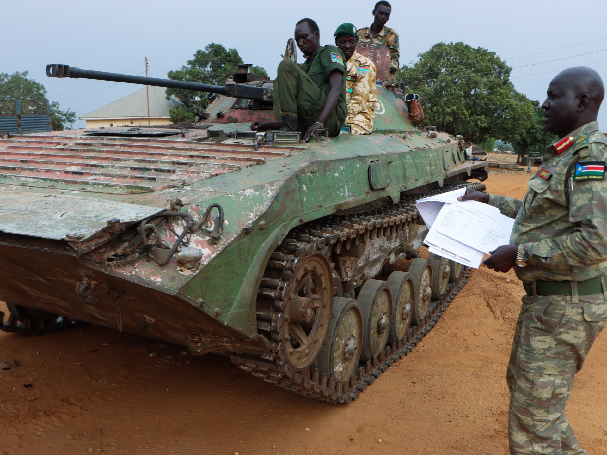
Here are some news stories you might not have seen amid the United States-Israel war on Iran.

Israel has released video it says shows the moment a missile fired by Hezbollah struck a satellite and radar station.

The World Health Organization warned that “black rain” caused by strikes on Iran’s oil facilities pose health risks.

The war has sent oil prices surging, upending global travel and pushing airline ticket costs on some routes sky-high.

The global rights group says erosion of health, safety in Gaza 'a deliberate act of war targeting women and girls'.
Lebanese leaders and aid groups warned of a growing humanitarian crisis as Israel targeted Hezbollah. The Pentagon said 140 American service members had been wounded, eight severely, in the war.
His father, Ayatollah Ali Khamenei, had turned what was traditionally a religious affairs office into a shadowy national security juggernaut.
Many in Iran feel helpless in the face of their entrenched system, and some are becoming increasingly embittered by the fierce American and Israeli bombardment.
Concern for the safety of the players had grown after Iranian state media criticized them for not singing the national anthem at a game in Australia.
Iranians cowered under the barrage as Pete Hegseth, the U.S. defense secretary, said the U.S. aimed to wipe out Iran’s capacity to obtain nuclear weapons “forever.”
Iranian detention centers, some holding people swept up in a government crackdown on protests along with other prisoners, have been damaged in the U.S.-Israeli airstrikes.
Eight Americans have been seriously wounded, military officials said, but the bulk of the injured have already returned to duty. Seven Americans have been killed.
Now 11 days into an expanding military campaign, President Trump and his officials have given conflicting indications on how long the United States intends the war to last.
France is highlighting its repatriation operations for nationals left stranded by the conflict with Iran.
Mass evacuation orders and an intensifying Israeli bombing campaign targeting the Iran-backed militia Hezbollah have caused a humanitarian crisis, aid groups warn.
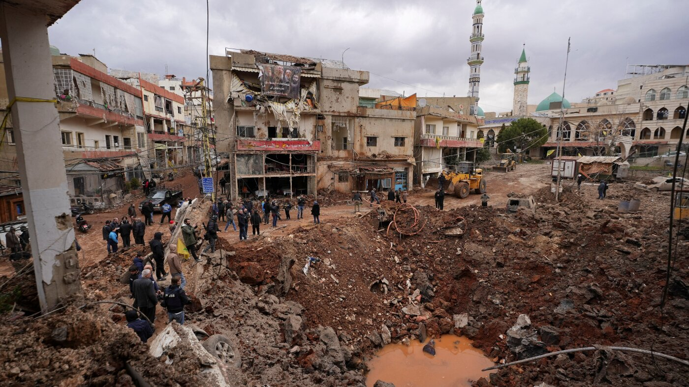
More than a week of the U.S. and Israel's war against Iran has dragged in global powers, upended the world's energy and transport sectors, and brought chaos to usually peaceful areas of the region.
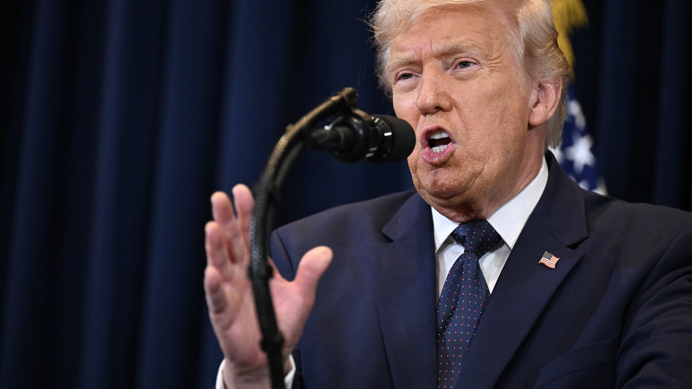
President Trump provided conflicting messages about when the U.S. and Israel's war with Iran will end. And, NPR investigates how late convicted sex offender Jeffrey Epstein leveraged ties with scientists.
Defense Secretary Pete Hegseth said the Pentagon was giving President Trump "maximum options" and that the war will not be "endless," a day after the president gave mixed signals about progress.

Lebanon says it's ready to talk to Israel to end the fighting, as the war in Iran intensifies.

Australia has granted asylum to five members of the Iranian women's soccer team who were in the country for a tournament when the Iran war began.
The U.S. and Israeli joint attacks on Iran have prompted alarm and intense discussion among China's foreign policy elite as they prepare for a U.S. presidential visit.
The second son of the late supreme leader keeps a low profile. But he's long been viewed as wielding his power behind the scenes, from crushing dissent to influencing presidential elections.
Iran has named Mojtaba Khamenei as its new supreme leader. And, President Trump says he will not sign any more bills until Congress overhauls voting.
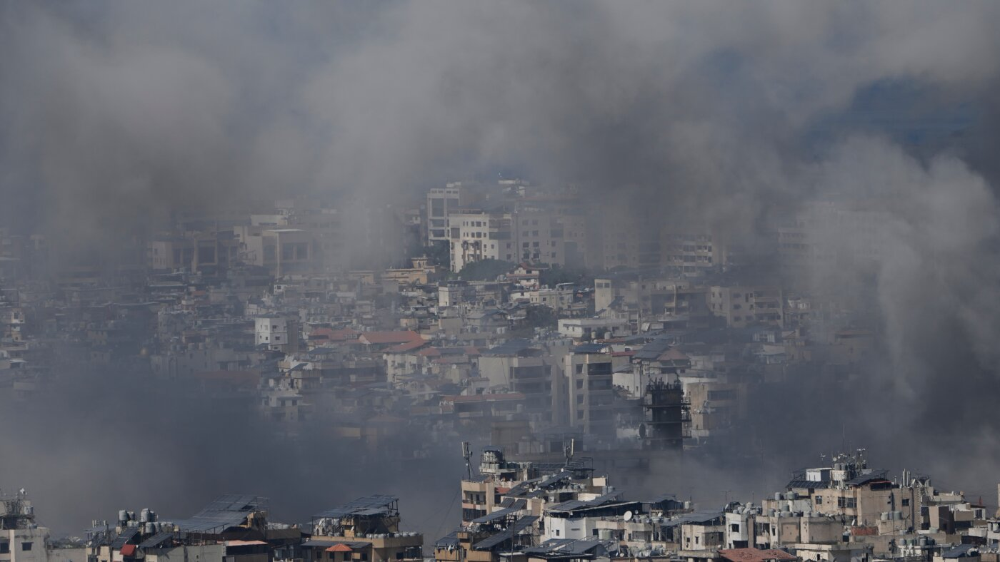
The Pentagon said a Space Brigade sergeant was killed and the price of oil increased after Iran named Mojtaba Khamenei as supreme leader and then launched new attacks at Israel and Gulf states.
Why this war of Donald Trump's choosing? As the death and destruction widen in Iran and around the region, as oil and gas markets take fright, the US president’s reasons for launching what his administration…

It is the centerpiece of Iran's oil industry. Located some 25 kilometers, or 15 miles, off the shore of mainland Iran, Kharg Island is a small but vital strip of land, for the Iranian regime. Around 90% of its crude oil exports pass through here. FRANCE 24's Solange Mougin reports.
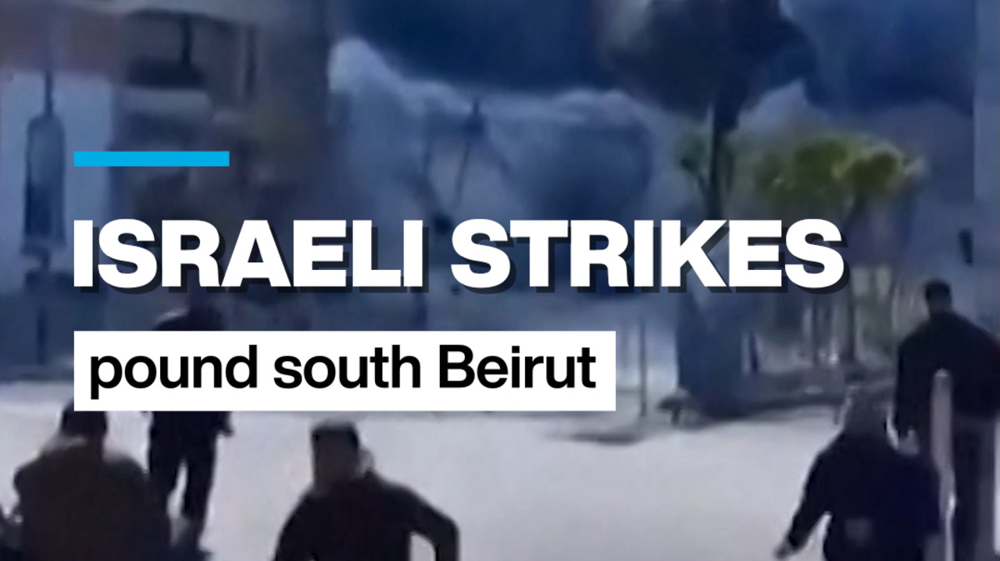
In the space of 24 hours, more than 100,000 people fled in #Lebanon amid #Israeli strikes. About 667,000 people have been displaced since the start of the attacks, which started following that of #Hezbollah on #Israel.

New footage shows what an expert investigative group says is likely an American Tomahawk missile hitting a compound in Minab, southern Iran, metres from the school where a deadly unclaimed blast killed over 165 people at the start of the war in the Mideast. It comes as mounting evidence points to US culpability for the strike.
Several cities in #Iran were targeted by fresh Israeli strikes as the US-Israeli campaign carried on in the country. US Secretary of Defence Pete Hegseth on March 10 warned it would be the "most intense day" of strikes in the country.

Some 25 kilometres off Iran’s southern coast lies a tiny island overrun by pipelines, terminals and storage facilities. This is Kharg Island – the beating heart of Iran’s oil exports – and a seemingly…
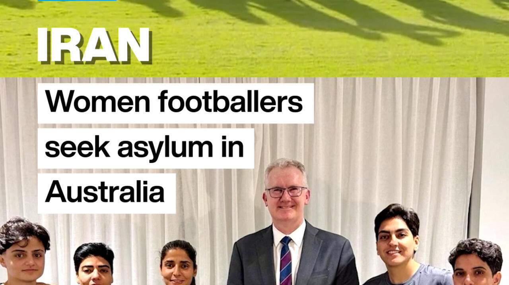
Australia on Tuesday granted humanitarian visas to five Iranian women soccer players after they sought asylum, fearing persecution on their return home for their refusal to sing the national anthem at an Asia Cup match. "Australians have been moved by the plight of these brave women," Australian Prime Minister Anthony Albanese told a news conference in Canberra a day after police helped extract the women from their Iranian government handlers.

FRANCE 24's François Picard welcomes Jon Marks, author, political scientist and chairman/founder of Cross-border Information. Having followed energy markets for decades, Marks warns that we are in uncharted…
Asked about how long US strikes in #Iran would last for, Donald #Trump assured the #war would end 'very soon'. But soon after, he threatened to escalate the conflict by striking Iran "twenty times harder" if it stopped the oil flow going through the Strait of #Hormuz.
Iran's parliamentary speaker Mohammad Bagher Ghalibaf warned on Tuesday that any attack on the Islamic Republic's infrastructure would result in "an eye for an eye, without compromise, without exception".…
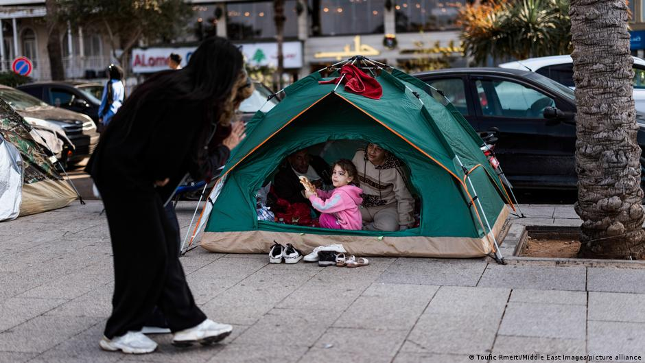
The widening Middle East war has triggered a new displacement crisis in Lebanon. Amid ongoing attacks, Beirut has postponed parliamentary elections. What is happening to people on the ground?
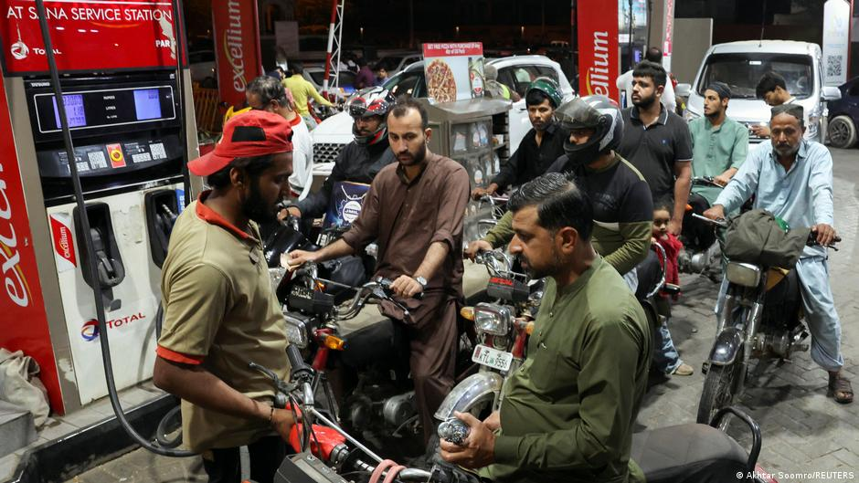
Pakistan announced fuel- and cost-saving measures to mitigate the economic strain from the ongoing conflict in Iran. The steps include temporary school closures, government salary cuts, and a ban on iftar gatherings.

Iran's civilians are dealing with US and Israeli airstrikes amid an internet blackout and with nearly no protection provided by the state. Even regime opponents are losing hope that the war will be over soon.
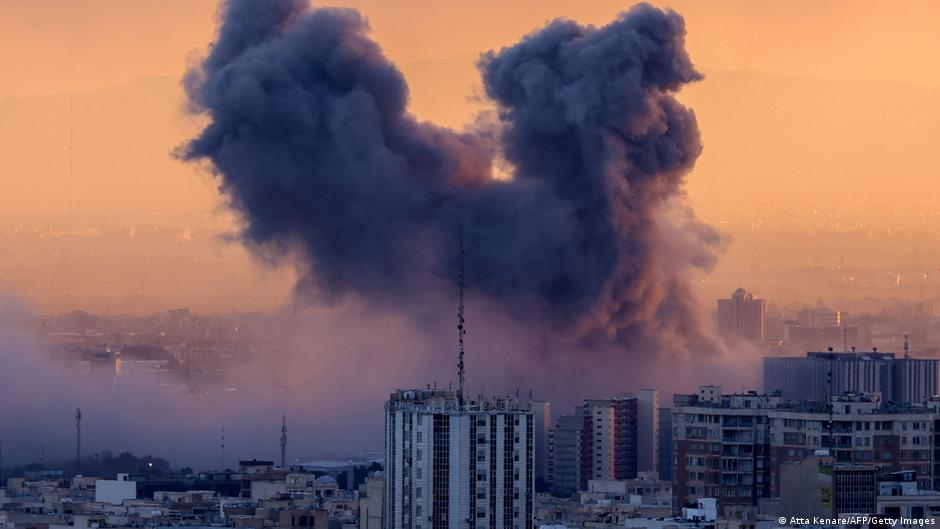
The US-Israeli attacks on Iran have raised tensions in the Middle East. Here's a look at the Iran war in charts and maps.
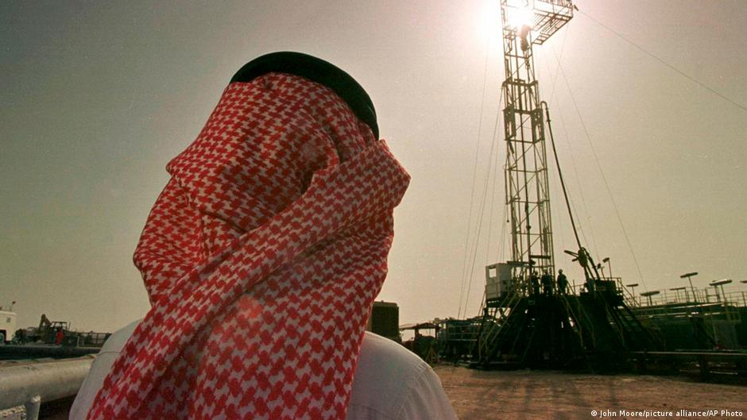
The oil price spiked near $120 after strikes on Iran's energy sites and the shutdown of the Strait of Hormuz. With tankers stuck and Gulf oil facilities hit, producers are running short on storage to maintain production.
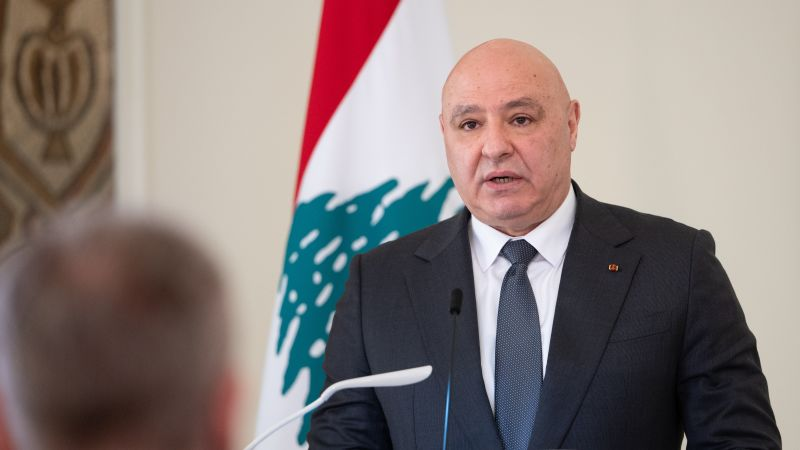
In a remarkable statement Monday afternoon, Lebanon called for direct talks with Israel on “permanent arrangements for security and stability on our borders,” while accusing the Iranian-backed militant group Hezbollah of betraying the country.